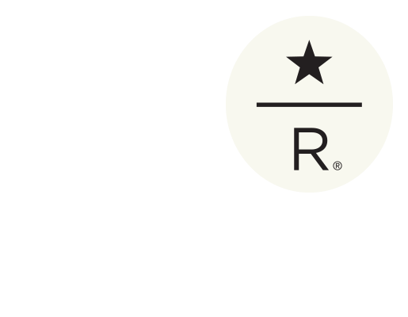

A Christmas classic since 1984
Festive, full-bodied and spicy with the addition of rare aged Sumatran coffee, our favorite tradition is finally hear. Grab a bag of Starbucks Chirstmas Blend Vintage 2018 before we're all out!
THE BEST COFFEE. STARBUCkS COFFEE FINDER.
Our coffee masters have distilled their years of tasting knowledge down to three simple questions to help you find a Starbucks coffee you're sure to love.
Explore our coffees >>
Browse our coffees >>


OUR RAREST COFFEES, SMALL-BATCH ROASTED IN SEATTLE
We travel the world in search of great coffee. In the process, we discover beans so special and rare that we can't wait to bring them home and share. Each of these small-lot coffees has its own story to tell, and we meticulously develop a signature roast for every one of them.